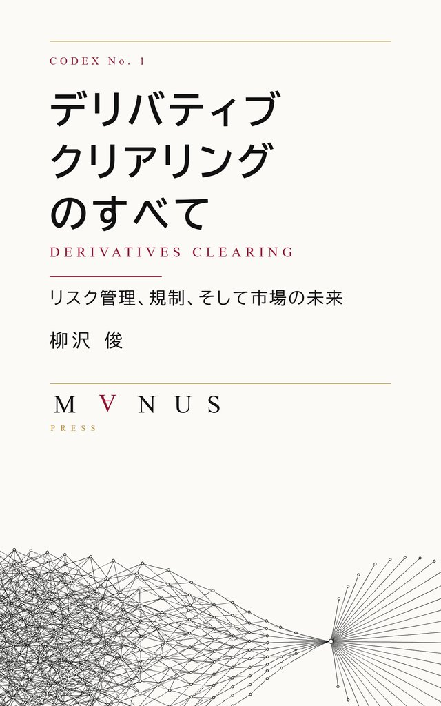
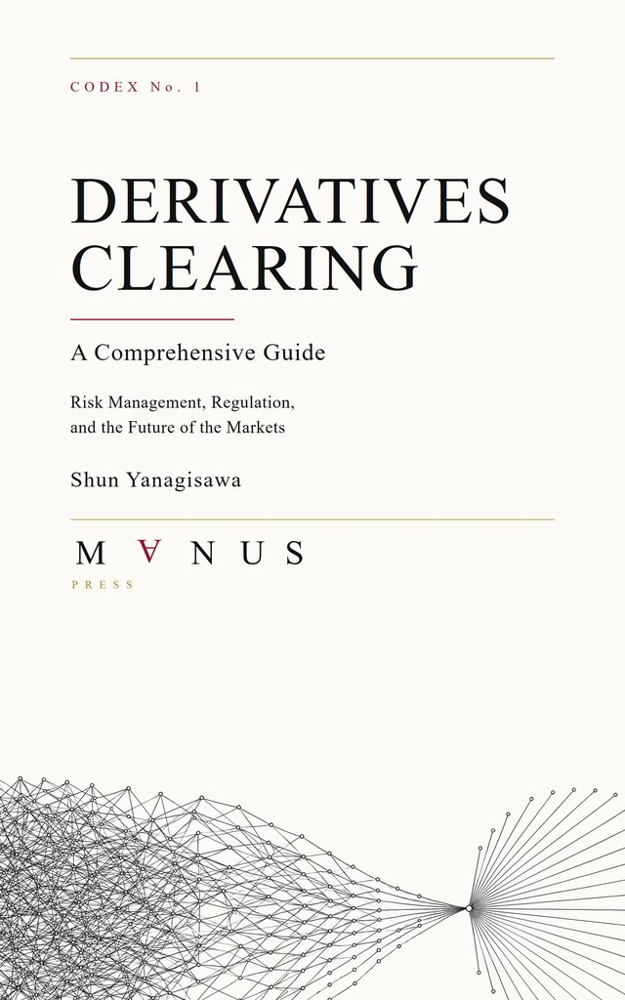

Books
著作
Two forms of inquiry
Thinking through the institutions of the market, and telling a story about the future of intelligence and consciousness. Through two different forms, I am exploring how order and trust come into being in a complex world.
市場の制度を考えることと、知性や意識の未来を物語ること。異なる二つの形式を通して、複雑な世界に秩序と信頼がどのように生まれるのかを探っています。


デリバティブ・クリアリングのすべてDerivatives Clearing: A Comprehensive Guide
The definitive Japanese-language reference on derivatives clearing. Drawing on twenty years at the frontline, this practitioner's handbook covers CCP architecture, margin mechanics, regulatory frameworks, and the future of Japan's clearing ecosystem.
デリバティブ・クリアリングを網羅する日本語初の本格専門書。CCP設計、マージンの力学、規制フレームワーク（バーゼルIII・EMIR・ドッドフランク）から日本市場の将来像まで、20年の実務から書き下ろした実務家向けCCPハンドブック。
阿頼耶識の海The Sea of Ālaya-vijñāna
A speculative novel weaving together artificial superintelligence, Buddhist consciousness theory (ālaya-vijñāna), and quantum mechanics. Two protagonists navigate the emergence of post-human intelligence and the ethics of designed consciousness. Forthcoming from M∀NUS Press as Liber No. 1.
人工超知能、仏教唯識の阿頼耶識、量子力学（遅延選択実験・ホログラフィック宇宙論）を融合したSF長編。超人間的知性の台頭と、設計された意識の倫理をめぐる二人の主人公の物語。M∀NUS Press より Liber No. 1 として刊行予定。
Read Preview (Vertical Text) → 縦書きで試し読み →Clearing Notes
クリアリング・ノート
After the book 刊行後の継続Short pieces placed on the chapter structure of the book, recording what moved in clearing regulation and market structure after the first edition. Written from primary sources, each carrying its first-publication date. In Japanese.
『デリバティブ・クリアリングのすべて』を書き終えた後も、クリアリングの世界は動き続けています。刊行後に起きた変化を、国内外の一次資料に基づいて、初版の章立てに沿って追っています。
クリアリング — 章立て
各稿を初版の関連する章に沿って並べています。稿のある章だけを載せ、参照資料と初出の日付を記載しています。
クリアリング用語集
実務で使われる主要な用語を、英語の略語、正式名称、日本語訳、短い定義とともに整理しています。複数の訳語が使われる用語には代表的な別表記も併記しました。
クリアリング・ブローカーは何をファイナンスしているのか：日中マージン・コールと「時間差の信用」
CCP は日中でも追加証拠金を請求しますが、顧客からの回収が同じ時間内に終わるとは限りません。その時間差を自己資金でつないでいるクリアリング・ブローカーの機能を、米国の residual interest 規制と JSCC の設計から確かめます。
証拠金はどこまで予測できるのか――国際指針が求めるシミュレーターと透明性
2026年の国際指針改定案は、透明性の目標を「再現可能性」に置き、証拠金シミュレーターをその手段に挙げました。公表済みの意見書を読み、CCP と清算参加者・顧客の目線がどこで分かれているのかを整理します。
ダイレクト・クリアリングの制度化：与信の有無で何が変わり、何が残るのか
CFTC の意見募集と業界の意見書を読むと、制度の境界線は、現物かデリバティブかではなく、損失を顧客自身が事前に資金化しているかどうかに引かれていることが分かります。その線が何に答えていないのかまで含めて整理しました。
FCMを経由しない清算では、誰が法的義務を担うのか――リテール向けダイレクト・クリアリングに残る制度上の懸念
本人確認や資金洗浄防止といった義務は、顧客との直接の関係に紐づいています。FCMを外した後、これらの義務を誰が担うのか。純粋な直接清算と、同じグループに関連FCMを置く垂直統合型を分けて、CFTCの意見募集とFIA・ISDAの意見書から考えます。
自動ロスカットはFCMを代替できるのか――レバレッジ型ダイレクト・クリアリングの限界
ダイレクト・クリアリングはリテール専用の仕組みではありません。全額担保・事前拠出型をレバレッジ型へ広げるとき、自動ロスカットは何を代替でき、何が外側に残るのか。分かれ目は参加者の属性ではなく、最大損失をいつ資金化するかです。
日本の店頭FXは、リテール直接清算の先例になるのか――ロスカット運用と損失負担の違い
日本の店頭FXは、CCP を欠いた遅れた制度ではなく、業者自身が顧客の取引相手となる完結した相対取引モデルです。同じロスカット技術を使いながら、法的な取引相手と損失負担の経路が異なる二つのモデルを比べます。